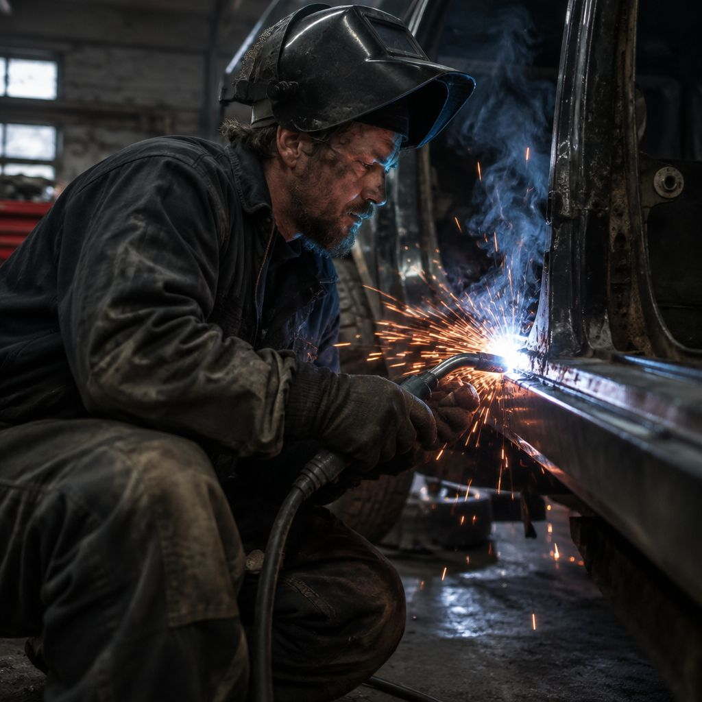
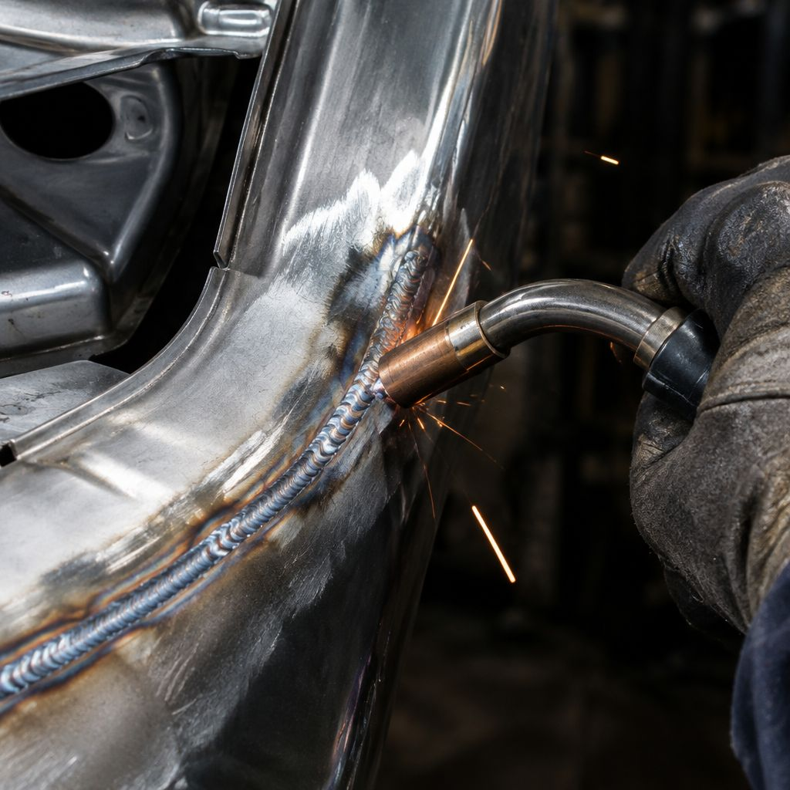
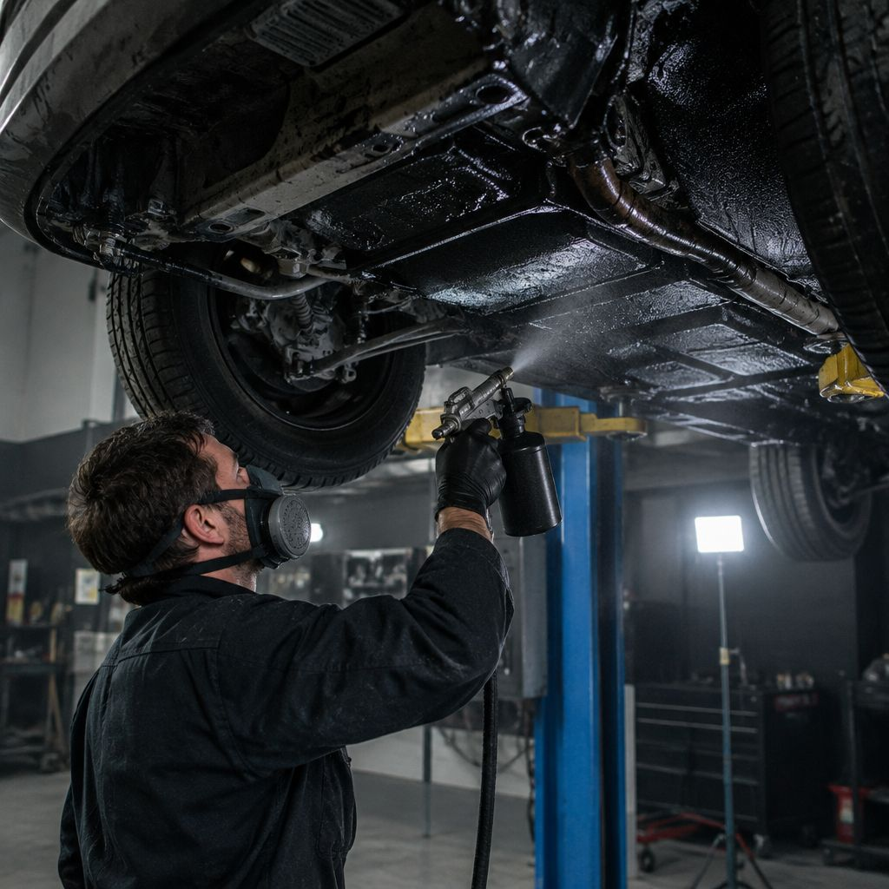
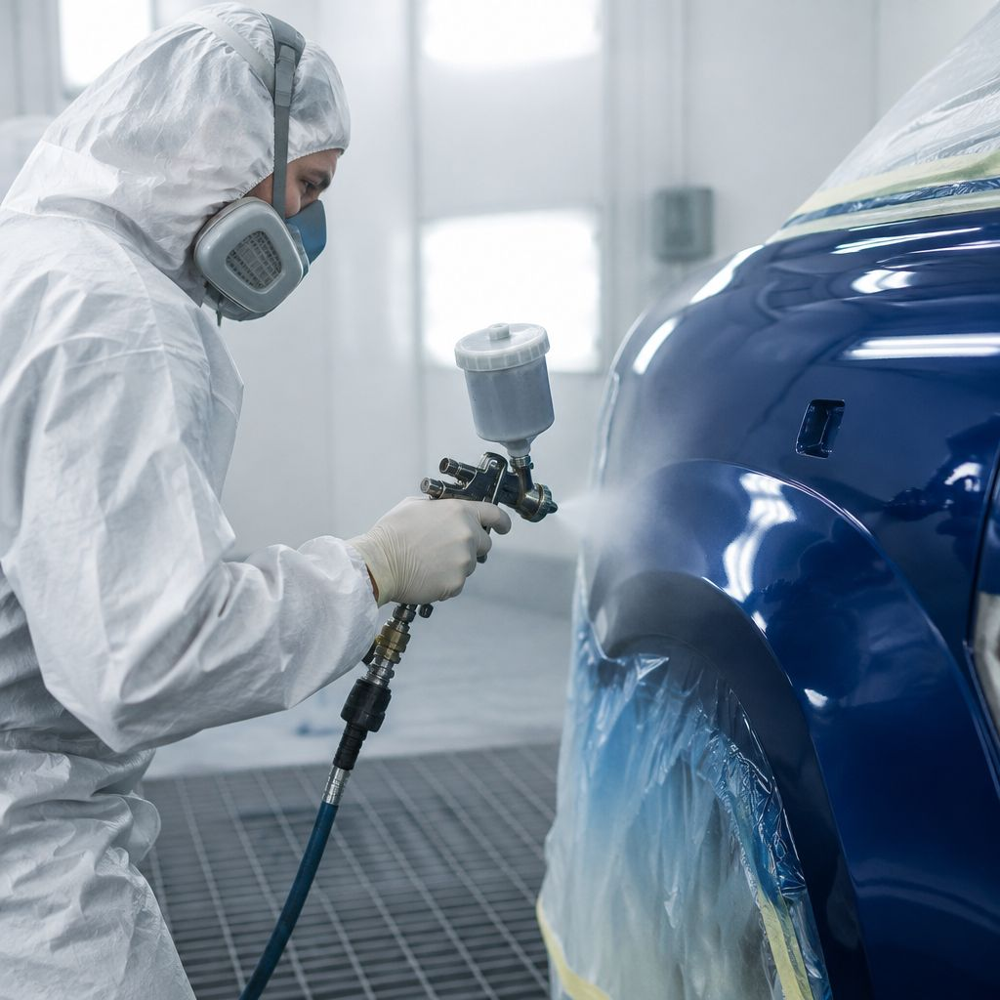
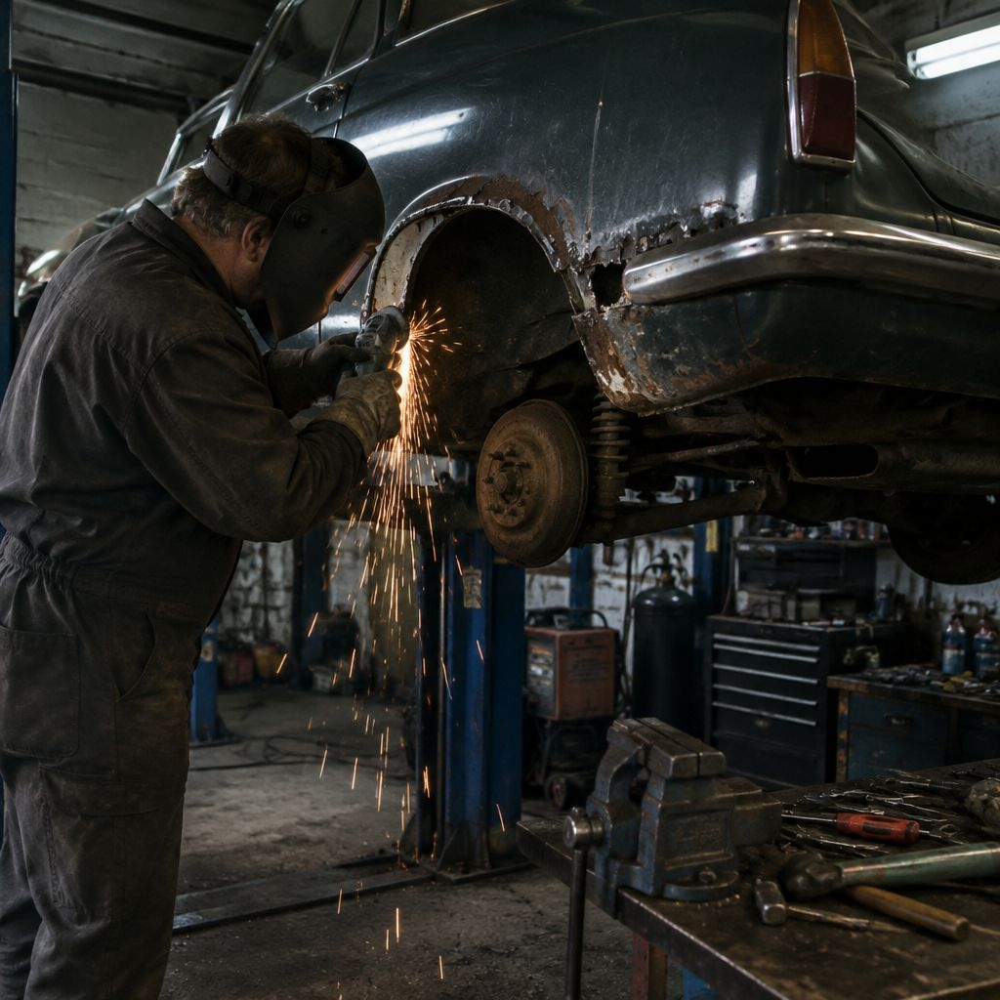

Работы
Как это выглядит в цеху
Сварка, антикор и покраска. По вашей машине пришлём фото до, в процессе и после, чтобы вы видели, за что платите.


SvarCar: сварочные работы, антикоррозийная обработка, кузовной ремонт и покраска. Вырезаем ржавчину до чистого металла, варим, защищаем шов и присылаем фото на каждом этапе. Не «замазать и продать», а сделать так, чтобы машина ездила дальше.

Почти всё из этого списка ремонтируется. И часто дешевле, чем искать другую машину с неизвестным прошлым.
Сняли пластик, а там рыхлая ржавчина и дыры. Вырезаем гниль до чистого металла, ввариваем ремонтную вставку, обрабатываем шов и закрываем антикором.
Снаружи ещё держится, внутри уже нет. Срезаем поражённый участок, варим, шлифуем, грунтуем. Иначе через сезон всё вернётся.
Меняем участки пола и порогов, герметизируем стыки, обрабатываем днище и скрытые полости. Вода перестаёт находить дорогу внутрь.
Заварим прогары, приварим кронштейны, поставим хомут и подвесы. Часто это дешевле, чем менять систему целиком.
Рихтуем, правим геометрию, подгоняем зазоры, готовим и красим. Сначала считаем, что реально спасти, а что проще заменить.
Посмотрим пороги, арки, днище и скрытые полости. Скажем, где шпакля и ржавчина, и во что обойдётся ремонт. Без «всё нормально, бери».
Сварка и антикор у нас в одном месте: не нужно варить в одном сервисе, а обрабатывать в другом и искать, кто виноват, если через год снова зацвело.

Кузов и не только: от порога до рамы прицепа. Полуавтомат, аргон, точечная сварка.

Днище, арки, пороги и скрытые полости. С разборкой локеров, мойкой и сушкой, а не «пшикнули сверху».

Вмятина, замена элемента, перекраска после ремонта. Подготовка и покраска без «переходов на глаз».

Ржавчину можно спрятать за шпаклей и мастикой. Хватит на один сезон, а потом всё вылезет снова, уже дороже. Мы делаем наоборот: сначала убираем причину, потом защищаем металл.
Сварка, антикор и покраска. По вашей машине пришлём фото до, в процессе и после, чтобы вы видели, за что платите.
Главное правило: вы знаете цену и объём до того, как машина заезжает в цех.
Опишите проблему или пришлите фото в WhatsApp. Скажем, с чего начать и нужен ли осмотр.
Смотрим машину: что варим, что меняем, где ржавчина под накладками. Называем сумму и срок.
Вырезаем, варим, обрабатываем, готовим и красим. Каждый этап фиксируем на фото.
Показываем результат, объясняем, что и когда проверить. Даём рекомендации по уходу за металлом.
Без обязательств и «приезжайте, там разберёмся». Посмотрим, назовём варианты и порядок цен. Если ремонт не нужен, так и скажем.